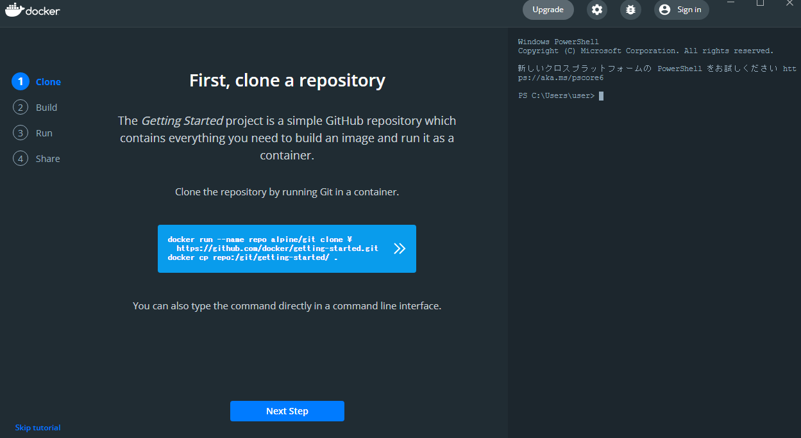
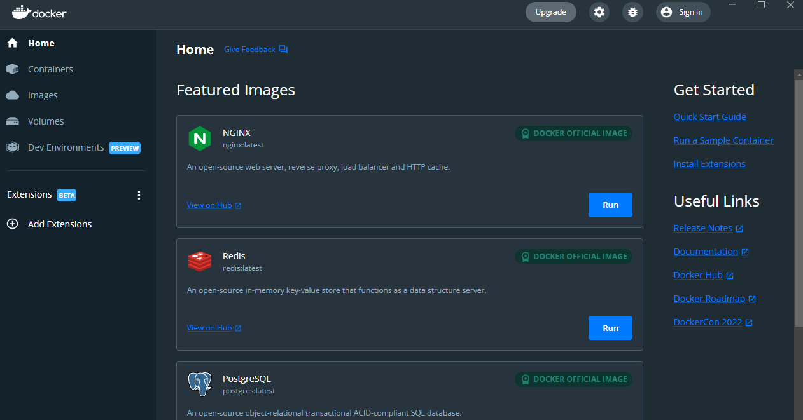
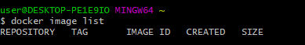
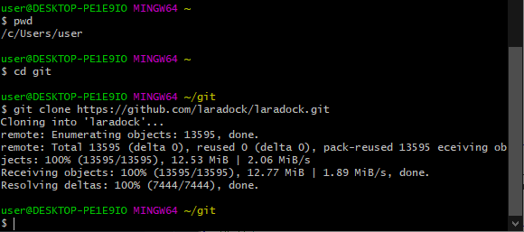
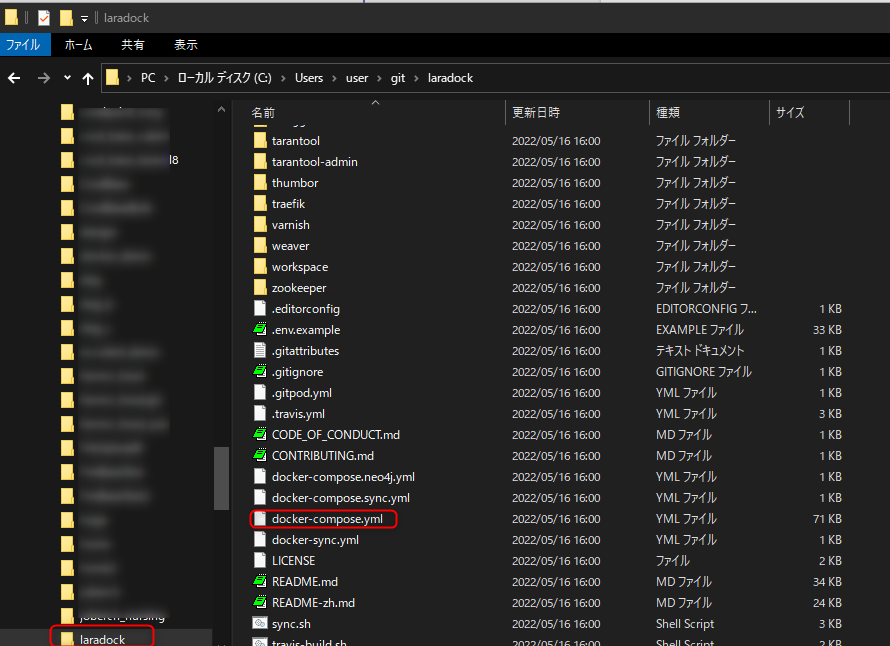

注意→Laradocを断念した記録になります。
はじめに
Docker for Windowsは何度も仕様が変わっているアプリである。
2022年の2月頃、Windows10 HOMEエディションでDocker for Windowsを動かそうとしたが、Docker startがどうしても動いてくれず結局断念した。
そして2022年5月、再びDocker for Windowsをインストールした。なんとUIが大幅に変わっている。Docker startにも成功した。
しかし、また使えなくなることもあるかもしれないが現時点の手順を書き記す。
必要な知識
下記の記述はDockerとDocker Composeで何度も試行錯誤をしたことがある人向け。
なぜDockerなのか。
開発環境構築を楽にしたい。というのが主な目的である。現実はDockerそのものに苦しめられる。
とはいえ、他の開発者のために開発環境構築手順を考えなければならないとき、Dockerで用意していると便利である。開発構築手順書を作成するときにも便利だ。
正直、開発環境構築を楽にしたい、という目的だけ見ればxamppで十分なのだが、2022年のご時世がこれを許さず。
Laradockについて
LaradocはDockerの数あるイメージの一つ。
LaravelだけにとどまらないPHP開発者に役立つパッケージらしい。正直こうゆうのを切望していた。
xamppのように簡単に開発環境を構築できることを期待する。
マウント(DockerではVolumeとか呼ばれている)とか大丈夫なのかな。
Docker for Windowsのインストール
下記のページから 「Docker Desktop for Windows」をダウンロードした。
https://docs.docker.com/desktop/windows/install/
インストールは簡単になっている。ダウンロードした「Docker Desktop Installer.exe」を実行するだけだ。
Assept(同意）にチェックを入れるくらいで、道なりに進めていくだけ。
初回のDocker startには数分の時間がかかる。（Docker starting ... という表示が数分続く）
下図のような画面が現れたらとりあえずインストール成功。


次回からのDocker起動(Docker start)は、通常のWindowsアプリの実行と同様にただDockerアプリ実行するだけ。
以前はWindowsのインジケーターからDockerをスタートさせる必要があったがこの手間がなくなった。
コマンドラインツールでDockerを動かす
次にコマンドラインツールでDockerの動作確認をする。
docker start成功後、Git Bashなどのコマンドラインツールを起動し、適当なdockerコマンドを実行してエラーにならなければ成功。
docker image list

「docker image list」はDockerイメージを一覧表示するコマンド。何もインストールしてないので当然今は空。
ちなみにDocker for windowsを立ち上げないで、コマンドラインツールでdockerコマンドを実行しようとすると以下のようなエラーが出る。
error during connect: This error may indicate that the docker daemon is not runn
ing.
Laradocの入手とインストール
Dockerhub で「laradoc」を検索するとたくさんのDockerイメージが出てくる。どれが公式かわからない。
なのでLaradocの公式サイトを探した。公式サイトのURLは下記の通り。
https://laradock.io/getting-started/#installation
Laravelの公式サイトにはインストール方法が書かれているようだが、よく分からない方法ばかり書かれている。
ほしいのはLaradocのイメージ情報なのだが見つからない。
とはいえ、手がかりになりそうな情報を見つけた。よく分からないがgitで何かをインストールするようだ。
git clone https://github.com/laradock/laradock.git
Dockerイメージなのかどうかよく分からないが、とりあえずコマンドラインツール(Git Bash)を立ち上げ、gitでインストールする。
cd /C/Users/user/git
git clone https://github.com/laradock/laradock.git

早速、インストールしたファイル群を見て手がかりがないか調べた。

見慣れたファイルである「docker-compose.yml」が見つかった。
これはDocker Composeのものだな。Dockerイメージという形ではなくDocker Composeという形で環境を提供していたのか。
早速、laradockをcdコマンドでlaradockをインストールしたディレクトリに移動し、「docker-compose up -d --build」を実行した。
$ cd git/laradock
$ docker-compose up -d --build
しかし、下記のメッセージで処理が止まってしまった。
services.traefik.ports value [':', ':', ':'] has non-unique elements
ググると下記の解決方法が見つかった。
https://stackoverflow.com/questions/66612657/laradock-docker-compose-yml-is-invalid-format-port-protocol-on-windows
https://github.com/laradock/laradock/issues/1437
laradockフォルダ内に存在する「.env.example」ファイルを「.env」という名前に変更する必要があるらしい。
早速名前をそのように変更して再度「docker-compose up -d --build」を実行してみる。
先ほどのエラーは解決したようだ。
しかし、1時間ほどの長い実行が続いた挙句、以下のエラーがでて停止した。
Service 'rethinkdb' failed to build : Build failed
「Service 'rethinkdb' failed to build : Build failed」をググってみる。
Debian8のサポート終了が原因という情報あり。解決策も複雑そうなものばかり。
そもそもRethinkDBではなくMySQLかMariaDBでないと意味がない。
残念だがLaradocにはここで見切りをつけることにした。他に良いDockerイメージはないものだろうか...
2022年5月28日 Laradocを断念。終わり。
ホーム プログラミングの覚書 Dockerの覚書 2022年5月時点のWindows10 HOMEエディションでDockerを動かす | Laradocインストールまで